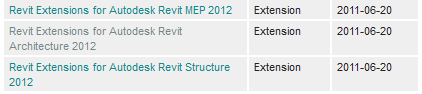

Extensions for Revit 2012
I recently mentioned the availability of the subscription packs for Revit 2012.
Yesterday, another important set of subscription packs were released: the Revit Extensions:
- Revit Extensions for Revit Architecture 2012
- Revit Extensions for Revit MEP 2012
- Revit Extensions for Revit Structure 2012

As always, they are available through the Autodesk subscription center, to which ADN members also have access by going to the ADN home page and selecting the Autodesk Subscription Center link.
Once again, even though all of this is "user stuff", many of the tools included in these extensions address workflows you might also be tempted to tackle through programming macros, so it is important for product users and application developers alike to be aware of them.
Here are feature lists for each of the three flavours.